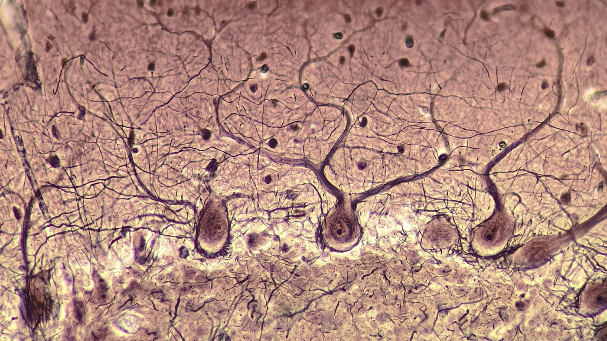
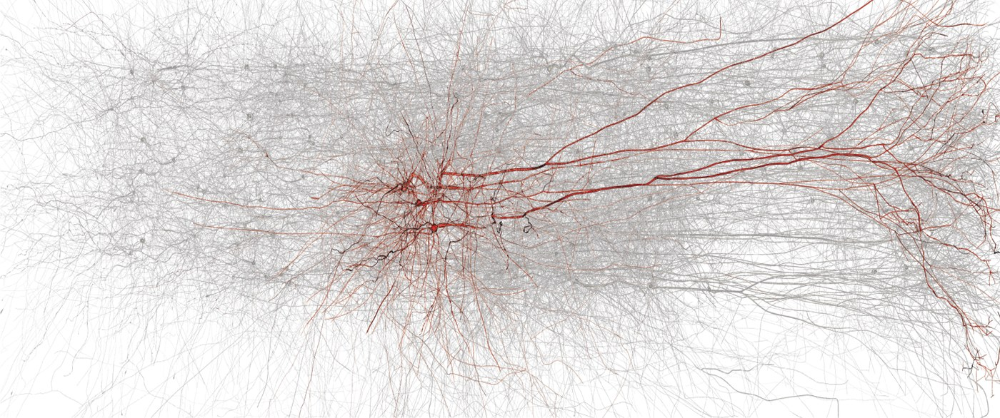

Modeling the Fragmented Self
An essay on the sense of agency and ego dissolution in psychiatric contexts, built on Haggard's comparator model of motor cognition. Written as a writing sample for PhD applications.
An essay on the sense of agency and ego dissolution in psychiatric contexts, built on Haggard's comparator model of motor cognition. Written as a writing sample for PhD applications.
A full Persian translation of Peggy Seriès' textbook (MIT Press), including a 220-term technical glossary — an attempt to make the field legible to Persian-speaking students and clinicians.

